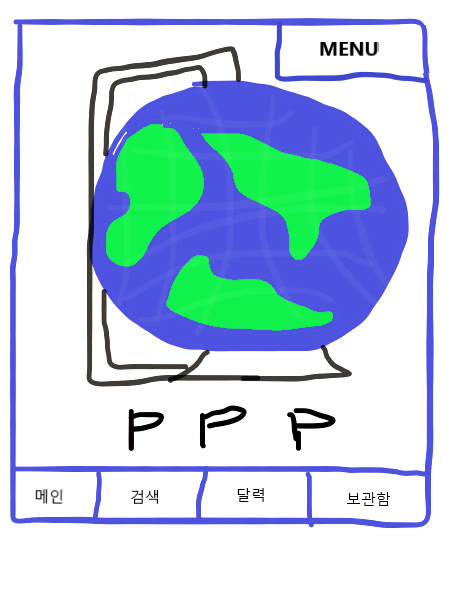

메인으로 돌아가기

메인-어플리케이션 실행시의 초기화면으로 돌아온다.
검색-원하는 검색엔진을 통해 정보를 얻고자 하는 웹사이트를 검색 후 등록한다.
달력-원하는 이벤트가 발생하였을때 이벤트들을 관리하기 위해 이미지화된 달력에
이벤트들을 채워 넣을 수 있고 푸쉬알람설정, 체크리스트 모델(진행도) 등을 통해 관리할 수 있다.
보관함-크롤링 설정된 웹페이지와 키워드 푸쉬알람등을 설정 할 수 있으며 이전에 관심 갖었던
또는 진행했었던 이벤트를 보여준다.